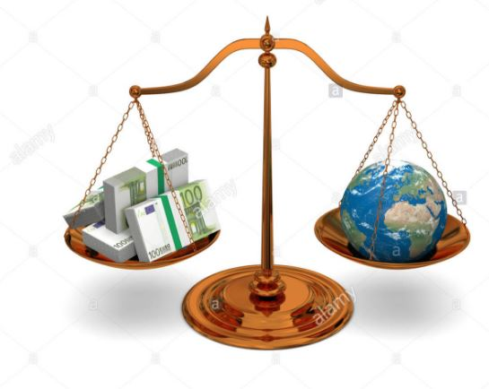
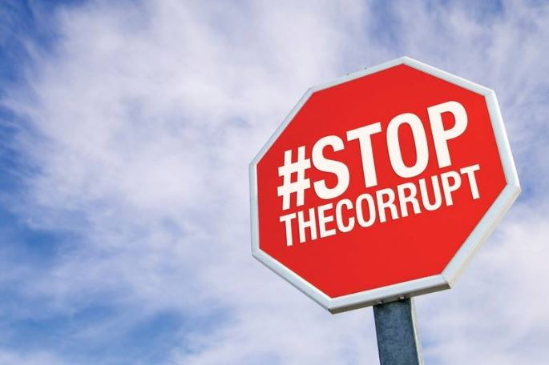

Political corruption
What is political corruption?
Political corruption is the abuse of political power by the
government leaders to extract and accumulate for private enrichment.
How does political corruption affects the world?
Political corruption affetcs everyone in the world, the lack of honesty,
justice, and ethical values is a threat to all of us. Society can be
affected in every aspect, and this is a danger that sadly is spread all
over the world.


